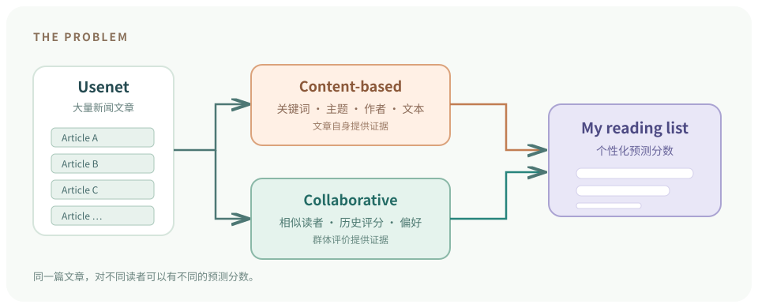
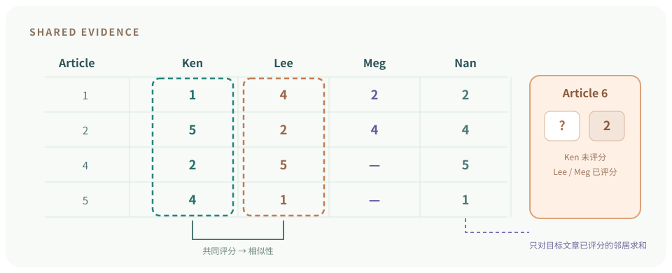
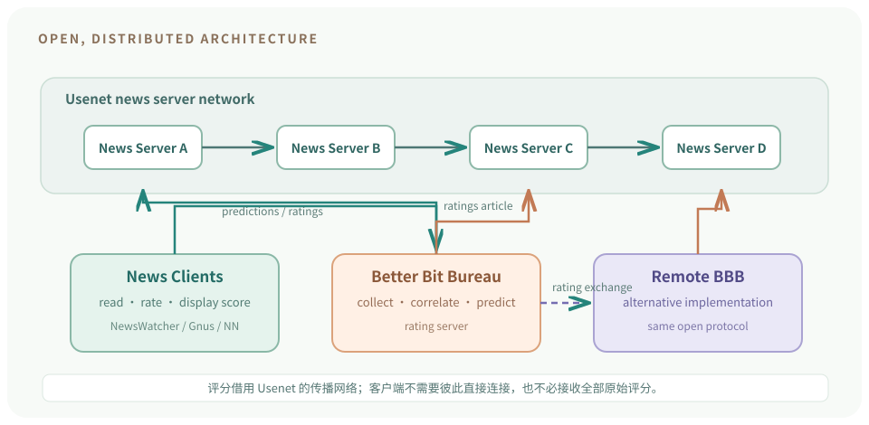
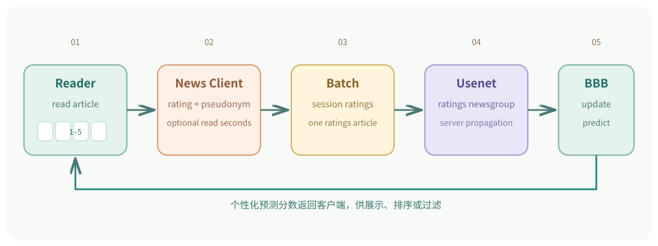
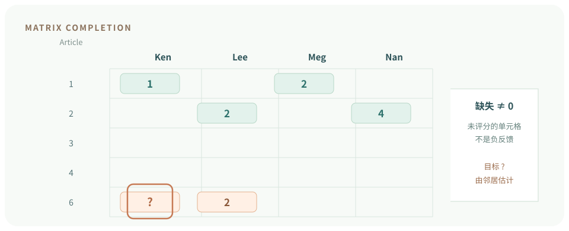
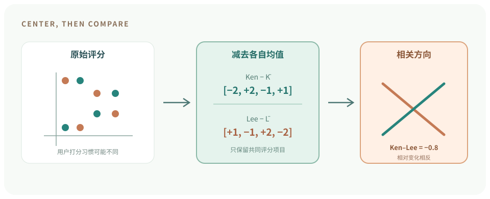
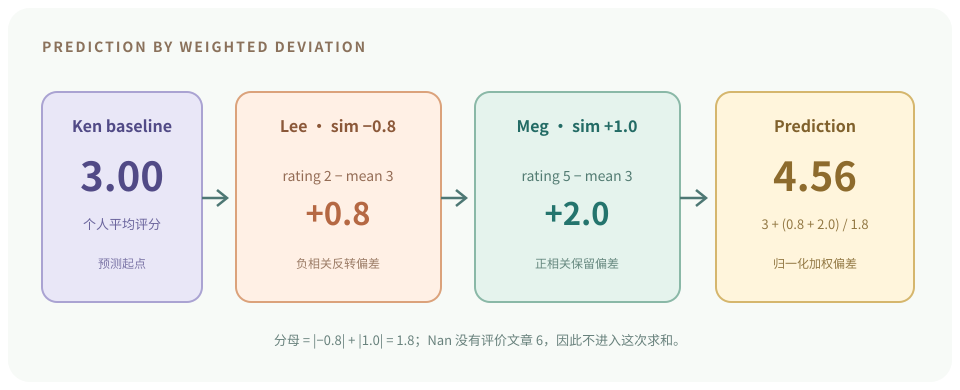

Understanding GroupLens
如果两个人过去喜欢相同的文章，我们能否借用其中一个人的评价，预测另一个人会不会喜欢一篇新文章？
核心论文：Resnick et al., GroupLens: An Open Architecture for Collaborative Filtering of Netnews (1994).
01 信息越来越多，为什么找到好内容仍然很难？
1994 年的 Usenet 是一个跨站点传播的公共新闻系统。用户把文章发布到 newsgroup，新闻服务器再把文章逐站传播。读者可以加入许多主题组，但每个组里仍然混杂着公告、问题、讨论、回复和质量参差不齐的内容。
原论文描述的痛点不是“找不到关键词”，而是同一个主题下，不同读者真正想看的内容并不相同。一篇文章可能对系统管理员非常有用，对另一个读者却毫无价值。用户需要在大量文章中逐篇筛选，最终有人干脆放弃阅读。
内容过滤可以依据主题、作者或词语做判断，但它难以直接理解文章的质量、语气、权威性和个人兴趣。人类读者却能对这些主观维度作出评价。
文章写了什么？用词语、主题、作者或内容特征匹配用户画像。
哪些人和我过去喜欢相似内容？利用他们对新内容的评价推断我的偏好。

02 一个简单的假设：过去意见一致，未来也可能一致
把问题缩小到两位读者。Ken 和 Lee 都给过去读过的文章打过分。如果 Ken 喜欢的文章 Lee 通常不喜欢，那么 Lee 对一篇新文章的高分，未必意味着 Ken 也会喜欢。相反，如果 Ken 和 Meg 的历史评分变化很一致，Meg 对新文章的评分就可能成为 Ken 的有用线索。
GroupLens 的基本机制不是“把所有人的分数平均”，而是“先估计谁的判断值得参考，再按相关程度组合他们的评分”。

这套方法依赖三个条件：有足够多的共同评分、用户偏好在一定时间和主题范围内相对稳定、目标文章至少已经被某些人评价过。后面的章节会逐个检查这些条件。
03 GroupLens 不只是一个公式，而是一套开放式系统
论文的标题强调 Open Architecture。GroupLens 将新闻阅读客户端与评分服务器分开：客户端负责收集用户评分、展示预测分数；服务器负责汇总评分、计算预测，并通过现有 Usenet 机制传播评分数据。

三个组件，各自承担什么责任？
嵌入现有新闻阅读流程，让用户阅读后快速打分，并显示预测分数、排序或过滤结果。
接收和聚合评分，按用户历史行为估计相似度，再计算每位读者的个性化分数。
传播新闻文章，也传播专门承载评分记录的 ratings newsgroup。
客户端和 BBB 可以由不同团队实现；只要遵守评分与通信格式，就能互操作。
原论文还强调五个设计目标：开放性、易用性、兼容性、可扩展性与隐私。它没有要求所有人使用同一个新闻阅读器，也没有把评分服务器绑定到单一厂商实现。
04 一条评分是怎样从阅读行为变成共享数据的？
用户阅读文章后，可以给出 1 到 5 的数字评分：1 最低，5 最高。评分可以附带阅读时长（秒），并通过用户选择的 pseudonym（化名）关联同一个人的历史记录。化名让系统能识别“同一评分者”，同时不必把真实姓名直接暴露给其他参与者。

- Read & rate：新闻客户端展示 1–5 的评分入口；用户也可以用键盘快捷键输入评分。
- Batch：BBB 将用户在一次阅读会话中产生的评分打包成一篇 ratings article。
- Propagate：评分文章被发布到专门的 newsgroup，沿用 Usenet 原有的服务器间传播机制。
- Aggregate & predict：BBB 汇总收到的评分，更新用户间关系，并为客户端请求的文章计算个性化分数。
- Display：客户端可以只展示分数、按分数排序，或隐藏低于阈值的文章。
05 用户—物品矩阵：推荐就是补全未知偏好
当评分与预测处于同一个 1–5 数值尺度时，可以把任务看成矩阵补全。原论文 Figure 5 的行是文章、列是用户；现代推荐系统教材也常把矩阵转置为“用户为行、物品为列”。方向不同，数学对象相同。
| 文章编号 | Ken | Lee | Meg | Nan |
|---|---|---|---|---|
| 1 | 1 | 4 | 2 | 2 |
| 2 | 5 | 2 | 4 | 4 |
| 3 | — | — | 3 | — |
| 4 | 2 | 5 | — | 5 |
| 5 | 4 | 1 | — | 1 |
| 6 | ? | 2 | 5 | ? |
空白表示用户没有提交评分，不代表零分。Ken 对第 6 篇文章的格子是待预测目标；Lee 与 Meg 已经评价过第 6 篇，因此可以成为本次预测的邻居。Nan 没有评价第 6 篇，不能直接贡献这一次的目标评分。

GroupLens 的 BBB 按 newsgroup 分别维护评分矩阵。这个细节很重要：两个人可能在技术文章上口味相似，却在笑话或体育讨论上意见不同。把不同主题的评分全部混在一个全局向量里，会抹掉这种局部兴趣结构。
06 Pearson 相似度：比较偏离各自平均值的方向
直接比较两个人的绝对评分会受到“打分尺度”的影响。一个用户可能习惯打 4–5 分，另一个用户可能习惯打 1–3 分，但两人仍可能对相同文章有相同的相对偏好。
Pearson 相关系数先减去每个人在共同评价文章集合上的平均分，再比较两个中心化评分向量是否同向。
Iuv 是 u 和 v 共同评价过的文章集合。公式中的均值也只在这个共同集合上计算。

当 Ken 与 Lee 的共同评分是 4 篇文章时，Ken 的评分为 [1, 5, 2, 4]，Lee 为 [4, 2, 5, 1]。两人的共同均值都是 3，中心化后分别是 [−2, 2, −1, 1] 和 [1, −1, 2, −2]。它们的点积为 −8，范数乘积为 10，因此相关系数为 −0.8。
07 评分预测：从自己的基线加上邻居偏差
相似度告诉我们“谁的判断可以参考”，还没有告诉我们“如何把邻居的分数转成我的分数”。如果直接对邻居评分求平均，会把每个人打分宽松或严格的习惯混在一起。
GroupLens 示例采用的做法是先从目标用户自己的平均分出发，再加上相似邻居相对于各自平均分的偏差。相似度作为权重；负相关用户的偏差会反向影响预测。
Ui 是已经评价目标文章 i 的邻居集合。预测基线均值使用目标用户的历史评分均值；邻居偏差使用邻居在目标文章之外的历史均值，避免把待预测项本身泄漏进基线。
可以把这个式子读成三步：
- 建立个人基线：目标用户 u 的平均评分是预测起点。
- 计算邻居偏差：每个邻居 v 对文章 i 的评分，减去 v 在文章 i 之外的历史平均评分。
- 按相关性加权：乘以 sim(u,v)，再除以相似度绝对值之和，控制整体尺度。
分母使用相似度绝对值之和，而不是简单求和。这样负相关邻居仍然能参与预测，但不会因为正负权重相互抵消而造成不稳定的归一化分母。
08 逐步复算：Ken 对第 6 篇文章的预测
现在回到论文 Figure 5。Ken 尚未评价文章 6；Lee 给了 2 分，Meg 给了 5 分。Ken 与 Lee 的历史相关系数是 −0.8；Ken 与 Meg 是 +1；Ken 与 Nan 是 0。由于 Nan 没有给文章 6 打分，他不在这次预测的邻居集合里。
| 邻居 | 文章 6 评分 | 邻居均值 | 相似度 | 加权偏差 |
|---|---|---|---|---|
| Lee | 2 | 3 | −0.8 | +0.8 |
| Meg | 5 | 3 | +1.0 | +2.0 |
| Nan | — | 3 | 0.0 | 不参与 |

Ken 的预测分数是 4.56，而不是把 Lee 的 2 分和 Meg 的 5 分简单平均成 3.5。
09 交互实验：改变邻居的判断，预测会怎样移动？
下面的实验使用论文 Figure 5 的固定历史评分。第一个控件切换用户对，重新计算 Pearson；第二个控件调整 Lee 和 Meg 对文章 6 的评分，观察 Ken 的预测。所有数值都在浏览器本地计算。
实验 A · 谁和 Ken 的兴趣更相似？
Pearson 均值只在两位用户共同评价的文章上计算。
负相关：两人的评分变化方向经常相反。
实验 B · 修改文章 6 的邻居评分
历史相似度固定为 Ken–Lee = −0.8、Ken–Meg = +1.0；仅修改当前文章的邻居评分。
Lee 的负相关会反转其评分偏差；Meg 的正相关保留偏差方向。
试着把 Lee 的评分从 2 提高到 5：由于 Ken 与 Lee 负相关，Lee 相对自身均值的正偏差会反向影响 Ken。再把 Meg 的评分降低，观察正相关邻居的贡献如何下降。
10 这个方法什么时候会失效？
新用户没有历史评分，无法建立稳定邻居；新文章没有任何人评价时，系统也无法仅靠评分预测。
两个用户可能只共同评价很少文章。相关系数即使数值很高，也未必可靠。
用户在不同 newsgroup 的兴趣可能不同。论文因此按 newsgroup 分开维护评分矩阵。
系统刚启动时可用评分不足。论文的小规模试验观察到预测需要经历一个积累阶段。
用户只读自己看到或愿意读的文章，评分矩阵不是随机缺失。用它比较两个过滤器可能产生偏差。
评分有助于他人，却需要用户额外投入；化名也不是防止兴趣推断的完整隐私方案。
计算与网络成本也会增长
论文讨论了预测质量、用户等待时间、BBB 的 CPU 与磁盘、网络流量等扩展性指标。BBB 可以预取评分并预计算预测，减少用户启动客户端时的等待；也可以限制参与计算的评分子集，以在计算时间和预测质量之间折中。评分记录还可以按会话批量传输，减少消息头开销。
这些是论文对规模问题的分析与设计选项，不是已经完成的百万用户性能基准。论文的网络流量表明确写的是假设估算，例如每个用户每天评价 100 篇、每条评分约 100 字节。
11 1994 年论文究竟验证了什么？
这篇论文需要特别谨慎地区分原型、试点观察、计划中的实验和后来的实地研究。
论文提到 Schlumberger 的早期七人试点，以及明尼苏达大学四人参与的早期版本试点。作者报告参与者认为预测逐渐贴近自己的兴趣，但样本很小，且评分函数与后续版本略有不同。
MIT 与 Minnesota 建立跨站点评分组和 BBB。论文明确说，这次测试不是为了证明用户更喜欢过滤后的 Netnews，而是为了识别扩展性问题并收集评分数据。
作者还指出，若用户只阅读被某个过滤器推荐的文章，那么评分数据会受到选择机制影响。另一个算法可能让用户看到不同文章；只在原算法选择出的文章上比较预测，会形成有偏样本。因此他们计划让参与者对训练集中的全部文章评分，以便更公平地比较不同预测算法。
后续的 Experiences with GroupLens: Making Usenet Useful Again（Miller, Riedl & Konstan, 1997）才报告了一个七周、250 名用户、超过 20,000 篇新闻文章的试验。那是后续系统与研究，不应把其数据倒填到 1994 年论文。
12 从 GroupLens 到现代推荐系统
GroupLens 的邻域预测不是现代推荐系统的全部，但它把“用户历史行为可以为另一个用户提供信息”变成了一个清晰的系统问题：如何表示反馈、如何比较偏好、如何聚合邻居、如何评估预测，以及如何让数据跨站点流动。

不直接寻找相似用户，而是比较物品之间的共现或评分关系，再用用户历史物品推断候选物品。
用低维潜向量表示用户与物品，通过内积或偏置模型估计偏好；不再显式依赖邻居列表。
面对点击、浏览、购买等隐式行为，优化用户偏好的相对顺序，而不把未点击直接当作负评分。
学习用户、物品、上下文和序列表示，常用于大规模候选召回与排序；需要独立评估延迟、偏差和业务目标。
GroupLens 留下的核心直觉仍然有效：用户行为是有结构的，个体偏好可以从群体反馈中估计。但当数据变得更稀疏、候选集更大、反馈更隐式、用户兴趣随时间变化时，模型和系统都需要继续演进。
参考文献与延伸阅读
- Resnick, P., Iacovou, N., Suchak, M., Bergstrom, P., & Riedl, J. (1994). GroupLens: An Open Architecture for Collaborative Filtering of Netnews. Proceedings of CSCW '94, 175–186. DOI · Full paper PDF.
- Goldberg, D., Nichols, D., Oki, B. M., & Terry, D. (1992). Using Collaborative Filtering to Weave an Information Tapestry. Communications of the ACM, 35(12), 61–70. DOI.
- Miller, B. N., Riedl, J. T., & Konstan, J. A. (1997). Experiences with GroupLens: Making Usenet Useful Again. USENIX Technical Conference. Paper PDF.
- Sarwar, B., Karypis, G., Konstan, J., & Riedl, J. (2001). Item-based Collaborative Filtering Recommendation Algorithms. WWW '01. DOI.
- Koren, Y., Bell, R., & Volinsky, C. (2009). Matrix Factorization Techniques for Recommender Systems. Computer, 42(8), 30–37. DOI.
- Rendle, S., Freudenthaler, C., Gantner, Z., & Schmidt-Thieme, L. (2009). BPR: Bayesian Personalized Ranking from Implicit Feedback. UAI 2009. Paper.
- Covington, P., Adams, J., & Sargin, E. (2016). Deep Neural Networks for YouTube Recommendations. RecSys '16. DOI.